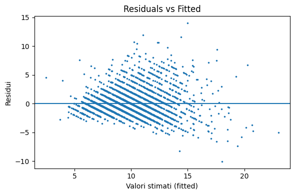
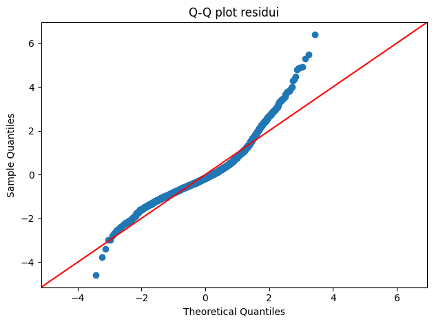

from ucimlrepo import fetch_ucirepo
import statsmodels.api as sm
import statsmodels.formula.api as smf
from sklearn.model_selection import train_test_split
from sklearn.metrics import mean_squared_error, mean_absolute_error, r2_score
import pandas as pd
import numpy as np
import matplotlib.pyplot as plt15-16: OLS (Abalone)
Caricamento dati + one-hot encoding
Il dataset ha una feature categoriale Sex (F/M/I). La trasformiamo in 3 colonne dummy (0/1).
abalone = fetch_ucirepo(id=1)
X: pd.DataFrame = abalone.data.features.copy()
y = abalone.data.targets.values.reshape(-1) # 1D
# one-hot su Sex
X = pd.get_dummies(X, columns=["Sex"], drop_first=False)
for c in ["Sex_F", "Sex_M", "Sex_I"]:
X[c] = X[c].astype(int)
X_train, X_test, y_train, y_test = train_test_split(
X, y, test_size=0.2, random_state=42
)
X.head()| Length | Diameter | Height | Whole_weight | Shucked_weight | Viscera_weight | Shell_weight | Sex_F | Sex_I | Sex_M | |
|---|---|---|---|---|---|---|---|---|---|---|
| 0 | 0.455 | 0.365 | 0.095 | 0.5140 | 0.2245 | 0.1010 | 0.150 | 0 | 0 | 1 |
| 1 | 0.350 | 0.265 | 0.090 | 0.2255 | 0.0995 | 0.0485 | 0.070 | 0 | 0 | 1 |
| 2 | 0.530 | 0.420 | 0.135 | 0.6770 | 0.2565 | 0.1415 | 0.210 | 1 | 0 | 0 |
| 3 | 0.440 | 0.365 | 0.125 | 0.5160 | 0.2155 | 0.1140 | 0.155 | 0 | 0 | 1 |
| 4 | 0.330 | 0.255 | 0.080 | 0.2050 | 0.0895 | 0.0395 | 0.055 | 0 | 1 | 0 |
OLS con intercetta + valutazione su test
In statsmodels, l’intercetta non è aggiunta automaticamente: la mettiamo con add_constant. Poi stimiamo su train e valutiamo su test con RMSE/MAE/R².
X_train_c = sm.add_constant(X_train)
X_test_c = sm.add_constant(X_test, has_constant="add")
ols = sm.OLS(y_train, X_train_c).fit()
print(ols.summary())
y_pred = ols.predict(X_test_c)
rmse = np.sqrt(mean_squared_error(y_test, y_pred))
mae = mean_absolute_error(y_test, y_pred)
r2 = r2_score(y_test, y_pred)
print(f"Test RMSE: {rmse:.3f} | MAE: {mae:.3f} | R^2: {r2:.3f}") OLS Regression Results
==============================================================================
Dep. Variable: y R-squared: 0.535
Model: OLS Adj. R-squared: 0.534
Method: Least Squares F-statistic: 425.5
Date: Wed, 04 Feb 2026 Prob (F-statistic): 0.00
Time: 15:00:31 Log-Likelihood: -7355.4
No. Observations: 3341 AIC: 1.473e+04
Df Residuals: 3331 BIC: 1.479e+04
Df Model: 9
Covariance Type: nonrobust
==================================================================================
coef std err t P>|t| [0.025 0.975]
----------------------------------------------------------------------------------
const 2.6537 0.235 11.299 0.000 2.193 3.114
Length -0.2016 2.080 -0.097 0.923 -4.281 3.877
Diameter 11.1234 2.547 4.367 0.000 6.130 16.117
Height 10.4453 1.615 6.467 0.000 7.278 13.612
Whole_weight 8.9322 0.863 10.346 0.000 7.239 10.625
Shucked_weight -20.2565 0.967 -20.943 0.000 -22.153 -18.360
Viscera_weight -9.5589 1.470 -6.504 0.000 -12.441 -6.677
Shell_weight 8.7924 1.308 6.724 0.000 6.228 11.356
Sex_F 1.0898 0.108 10.136 0.000 0.879 1.301
Sex_I 0.3708 0.090 4.140 0.000 0.195 0.546
Sex_M 1.1931 0.099 12.068 0.000 0.999 1.387
==============================================================================
Omnibus: 750.514 Durbin-Watson: 1.980
Prob(Omnibus): 0.000 Jarque-Bera (JB): 2218.560
Skew: 1.155 Prob(JB): 0.00
Kurtosis: 6.256 Cond. No. 1.88e+15
==============================================================================
Notes:
[1] Standard Errors assume that the covariance matrix of the errors is correctly specified.
[2] The smallest eigenvalue is 2.72e-27. This might indicate that there are
strong multicollinearity problems or that the design matrix is singular.
Test RMSE: 2.212 | MAE: 1.593 | R^2: 0.548Come leggere summary() (in modo semplice)
- R-squared / Adj. R-squared: quanto il modello spiega sul training (utile, ma non basta).
- F-statistic e relativo Prob (F-statistic): test globale “c’è almeno una feature utile?”.
- Tabella coefficienti:
- coef: effetto stimato (a parità delle altre variabili).
- std err: incertezza della stima.
- P>|t|: se è piccola (es. < 0.05), il coefficiente è “diverso da 0” nel modello.
- [0.025, 0.975]: intervallo di confidenza al 95% del coefficiente (se include 0, effetto poco certo).
In pratica: guarda sempre anche le metriche su test (RMSE/MAE/R²) e un controllo dei residui.
Formula interface (più leggibile)
Con smf.ols("y ~ x1 + x2 + ...", data=df) i nomi restano chiari e la costante è inclusa di default. Qui usiamo le colonne già preprocessate.
df_all = X.copy()
df_all["Rings"] = y
df_train = df_all.loc[X_train.index].copy()
df_test = df_all.loc[X_test.index].copy()
formula = "Rings ~ " + " + ".join([c for c in df_train.columns if c != "Rings"])
ols_f = smf.ols(formula, data=df_train).fit()
print(ols_f.summary())
y_pred_f = ols_f.predict(df_test)
rmse_f = np.sqrt(mean_squared_error(df_test["Rings"], y_pred_f))
print(f"Test RMSE (formula): {rmse_f:.3f}") OLS Regression Results
==============================================================================
Dep. Variable: Rings R-squared: 0.535
Model: OLS Adj. R-squared: 0.534
Method: Least Squares F-statistic: 425.5
Date: Wed, 04 Feb 2026 Prob (F-statistic): 0.00
Time: 15:00:31 Log-Likelihood: -7355.4
No. Observations: 3341 AIC: 1.473e+04
Df Residuals: 3331 BIC: 1.479e+04
Df Model: 9
Covariance Type: nonrobust
==================================================================================
coef std err t P>|t| [0.025 0.975]
----------------------------------------------------------------------------------
Intercept 2.6537 0.235 11.299 0.000 2.193 3.114
Length -0.2016 2.080 -0.097 0.923 -4.281 3.877
Diameter 11.1234 2.547 4.367 0.000 6.130 16.117
Height 10.4453 1.615 6.467 0.000 7.278 13.612
Whole_weight 8.9322 0.863 10.346 0.000 7.239 10.625
Shucked_weight -20.2565 0.967 -20.943 0.000 -22.153 -18.360
Viscera_weight -9.5589 1.470 -6.504 0.000 -12.441 -6.677
Shell_weight 8.7924 1.308 6.724 0.000 6.228 11.356
Sex_F 1.0898 0.108 10.136 0.000 0.879 1.301
Sex_I 0.3708 0.090 4.140 0.000 0.195 0.546
Sex_M 1.1931 0.099 12.068 0.000 0.999 1.387
==============================================================================
Omnibus: 750.514 Durbin-Watson: 1.980
Prob(Omnibus): 0.000 Jarque-Bera (JB): 2218.560
Skew: 1.155 Prob(JB): 0.00
Kurtosis: 6.256 Cond. No. 1.88e+15
==============================================================================
Notes:
[1] Standard Errors assume that the covariance matrix of the errors is correctly specified.
[2] The smallest eigenvalue is 2.72e-27. This might indicate that there are
strong multicollinearity problems or that the design matrix is singular.
Test RMSE (formula): 2.212Intervalli di confidenza dei coefficienti
Utile per vedere quali coefficienti sono stimati con più precisione.
ci = ols.conf_int(alpha=0.05)
ci.columns = ["CI_low", "CI_high"]
coefs = ols.params.rename("coef")
coef_table = pd.concat([coefs, ci], axis=1).sort_values("coef", ascending=False)
coef_table.head(12)| coef | CI_low | CI_high | |
|---|---|---|---|
| Diameter | 11.123391 | 6.129592 | 16.117190 |
| Height | 10.445325 | 7.278322 | 13.612329 |
| Whole_weight | 8.932176 | 7.239409 | 10.624942 |
| Shell_weight | 8.792378 | 6.228441 | 11.356315 |
| const | 2.653678 | 2.193204 | 3.114152 |
| Sex_M | 1.193068 | 0.999236 | 1.386901 |
| Sex_F | 1.089792 | 0.878976 | 1.300608 |
| Sex_I | 0.370818 | 0.195211 | 0.546425 |
| Length | -0.201554 | -4.280565 | 3.877458 |
| Viscera_weight | -9.558916 | -12.440667 | -6.677166 |
| Shucked_weight | -20.256545 | -22.152940 | -18.360150 |
Predizione + intervalli
get_prediction(...).summary_frame()produce anche intervalli.mean_ci_*: intervallo di confidenza della media E[Y|X].obs_ci_*: intervallo di predizione per una nuova osservazione (più largo).
pred = ols.get_prediction(X_test_c.iloc[:5])
pred.summary_frame(alpha=0.05)| mean | mean_se | mean_ci_lower | mean_ci_upper | obs_ci_lower | obs_ci_upper | |
|---|---|---|---|---|---|---|
| 866 | 11.761361 | 0.123218 | 11.519770 | 12.002953 | 7.459743 | 16.062979 |
| 1483 | 10.241926 | 0.095967 | 10.053766 | 10.430087 | 5.942978 | 14.540875 |
| 599 | 14.001036 | 0.119701 | 13.766340 | 14.235731 | 9.699799 | 18.302272 |
| 1702 | 11.995093 | 0.079694 | 11.838839 | 12.151347 | 7.697423 | 16.292763 |
| 670 | 11.161415 | 0.094532 | 10.976069 | 11.346761 | 6.862589 | 15.460241 |
Residui
- Residui vs fitted: se vedi pattern → possibile non linearità / varianza non costante.
- Q-Q plot: se molto lontano dalla diagonale → residui non “gaussiani” (non sempre un disastro, ma è un segnale).
fitted = ols.fittedvalues
resid = ols.resid
plt.figure(figsize=(6,4))
plt.plot(fitted, resid, ".", ms=3)
plt.axhline(0)
plt.xlabel("Valori stimati (fitted)")
plt.ylabel("Residui")
plt.title("Residuals vs Fitted")
plt.tight_layout()
plt.show()
plt.figure(figsize=(6,4))
sm.qqplot(resid, line="45", fit=True)
plt.title("Q-Q plot residui")
plt.tight_layout()
plt.show()
<Figure size 600x400 with 0 Axes>